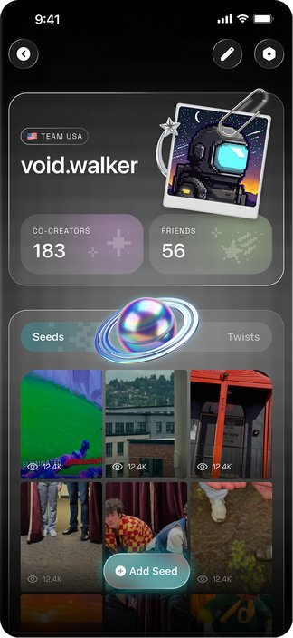
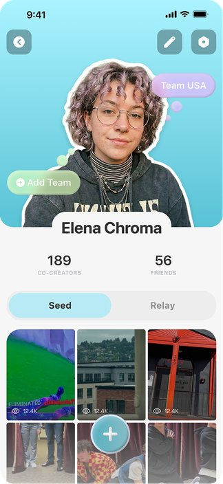
AI-powered short-form video social app for Gen-Alpha
The Company
Wapoo is a mobile social app targeting Gen Alpha users in the US, where people can use AI to warp and remix short-form videos, including “twisting” someone else’s video to give it a new ending, before sharing it within the app.
Wapoo’s logo
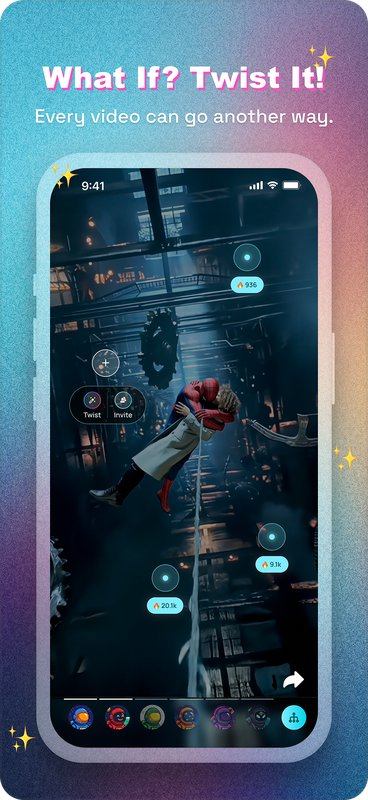
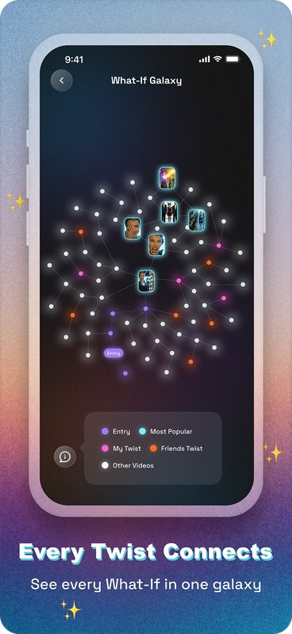
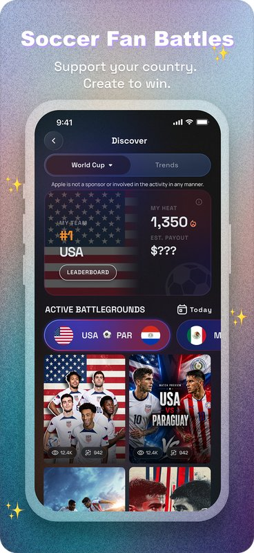
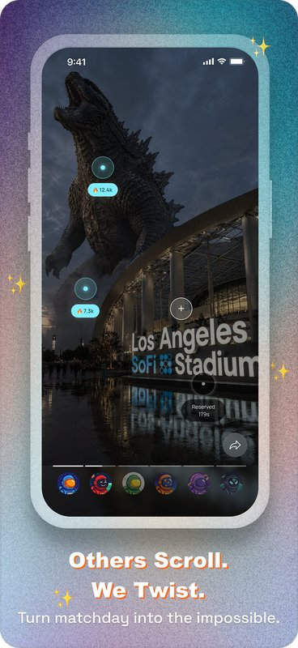
Product details for Wapoo on app store
I joined Wapoo as a product design intern, where I was given two main projects: revamping the app’s overall UI, and designing the interface for the World Cup Fan War. You can click here to jump directly to the second section of this case study.
Context
Wapoo’s MVP leaned into a bold, playful visual style to match Gen Alpha’s internet culture, but the result felt too busy and unpolished. I led a revamp of the app’s UI to strike a better balance between that energy and visual clarity.
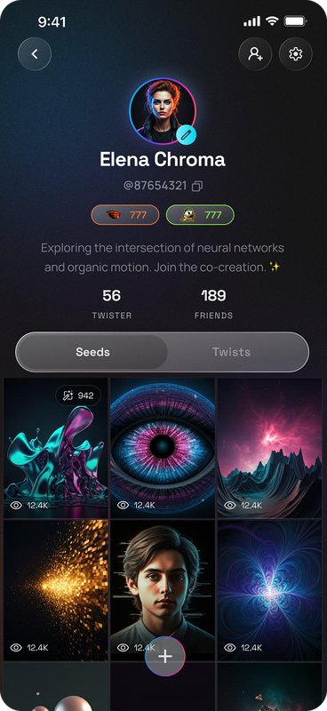
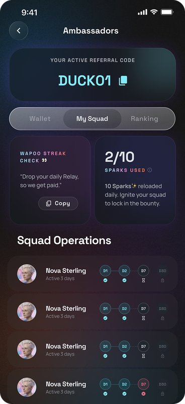
How might we revamp Wapoo’s UI to keep its playful, Gen Alpha energy while making the experience feel cleaner and more polished?
Competitor & secondary research
After competitor research, I also reviewed early internal research on Gen Alpha’s UI preferences. A cleaner, pastel interface outperformed the boldest option, indicating that Gen Alpha doesn’t necessarily prefer maximalist design and still need something clean and refined.
Bump
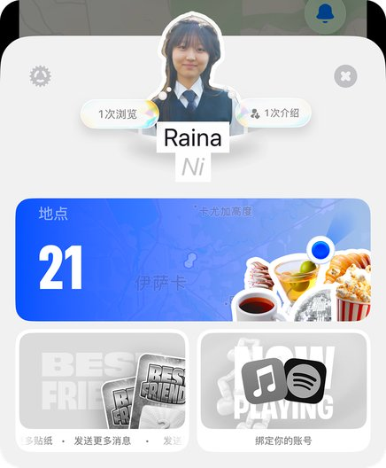
Profile page on Bump
A consistent, recognizable style prevents a product from looking cheap.
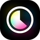
ForReal
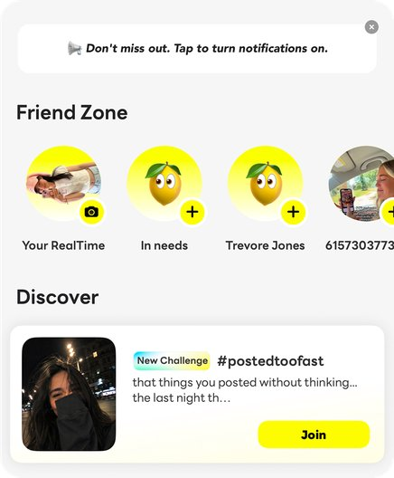
Home page on ForReal
Express the Gen Alpha style through components instead of large gradients across the screens.
TikTok
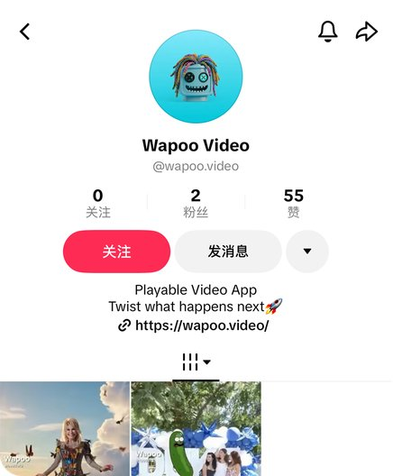
Profile page on TikTok
Clear hierarchy matters even more when the aesthetic is already bold and playful.
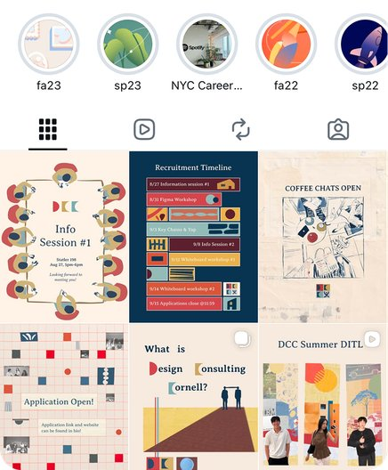
Profile page on Instagram
Reduce color and highlights in the interface itself on media-heavy pages.
Design decisions
Primary color: Blue
Since the logo remains unchanged, the primary color had to stay some form of blue for visual consistency.
Incorporate 3D elements
Since the logo itself is 3D, I aimed to bring 3D elements into the UI as well.
All designs should feel playful
Every redesign had to keep that energy front and center, since this quirky energy is core to Wapoo’s identity.
Some designs should feel futuristic
As a nice-to-have, I explored futuristic themes in my designs, given that Wapoo is an AI product.
Redesigns
With my first redesign, I wanted to explore a direction that was clean but still playful, since our previous design had leaned too chaotic. I also experimented 3D elements in the UI to correspond with our 3D logo.
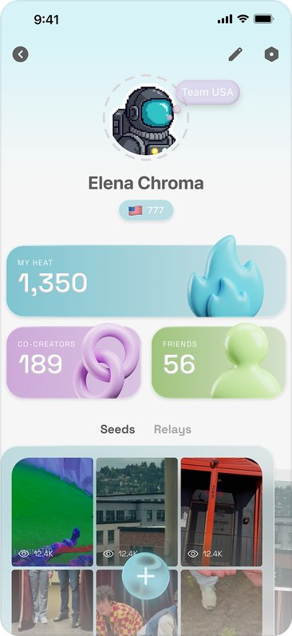
Redesign 1 - Profile page
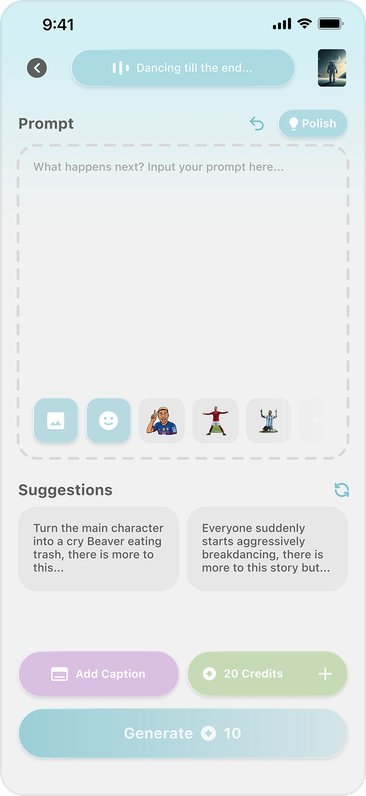
Redesign 1 - Editor page
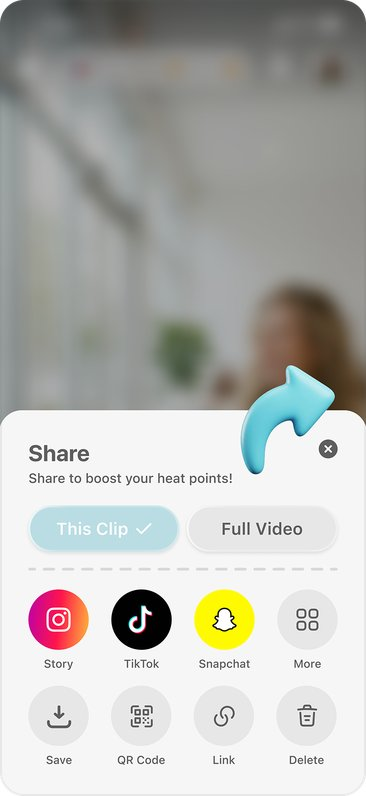
Redesign 1 - Share page
Clean light-blue base, with playful details (bubbles, 3D figures, dashed lines)
Overlapping cards for the video gallery — playfulness expressed through layout, not just decoration.
I turned profile stats from plain numbers into individual decorated cards, where the branding can be showcased.
Reused UI elements and color palette make the style feel consistent.
Purple and green kept minimal in screens to avoid visual chaos.
Redesigns
For my second version, I explored the Soft Neon aesthetic in dark mode, leaning further into neon and glass details to push toward a more futuristic feel that reflects our AI-driven product. I also toned down the softer elements that may have made Redesign 1 look too cutesy.
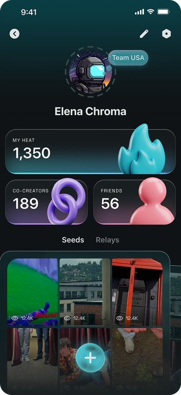
Redesign 2 - Profile page
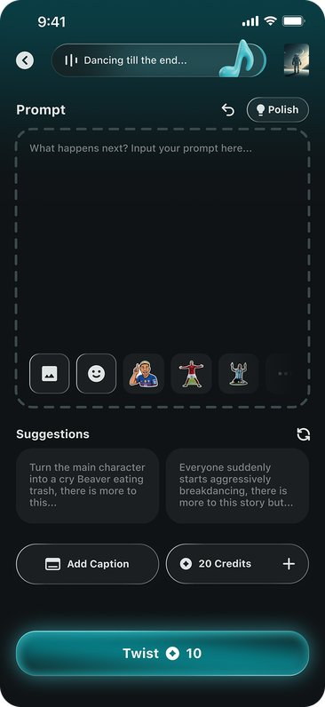
Redesign 2 - Editor page
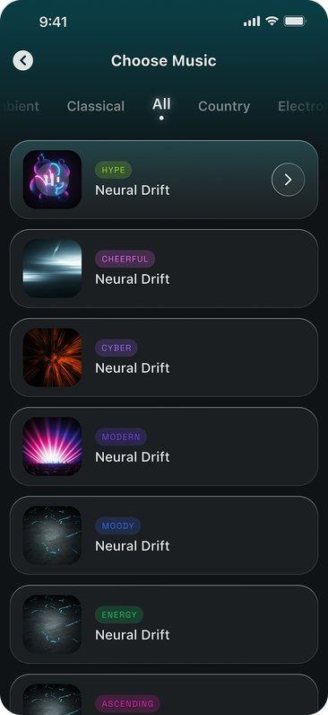
Redesign 2 - Music page
I used glass (mimicked with strokes and gradients since our code language couldn’t render the glass effect) to express a futuristic theme.
I made each redesign with unpolished video covers to see if the design still looks good.
Color stays minimal around videos and profile photos
Redesigns
For my third redesign, I shifted away from glass and 3D textures, since both previous versions leaned heavily on them. I wanted to see if the playful theme could come through with a flat interface instead, using 3D only occasionally for CTAs.
Redesign 3 - Profile page
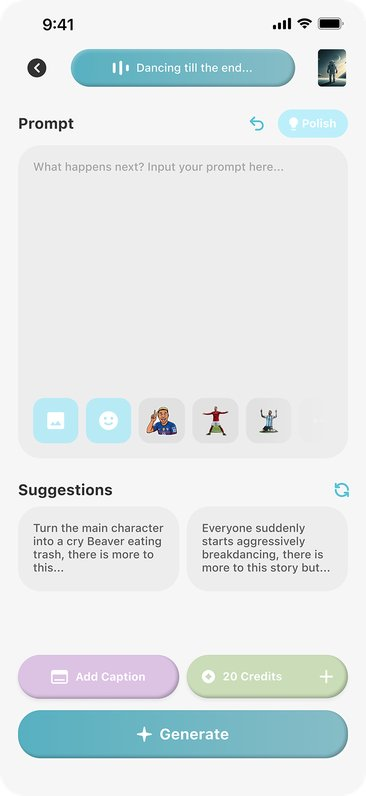
Redesign 3 - Editor page
The color scheme and UI style that worked well on the profile page fell flat on pages without much imagery. Without photos, the screen felt uncreative and lacked the decorative details other versions had.
The profile picture must be an actual person, but not every user wants to upload their photo.
Large smooth corners make the interface feel soft and intimate. This also creates a distinct visual identity.
Redesigns
Redesign 3 didn’t work out, so I wanted to reintroduce texture and richness into the design. I also experimented with new storytelling elements — celestial, starry visuals and pixel art — to express something futuristic and cyberpunk, yet still playful and social.
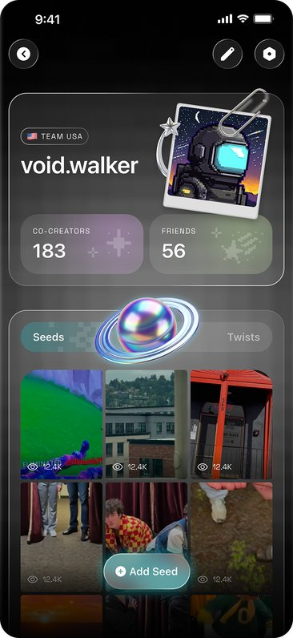
Redesign 4 - Profile page
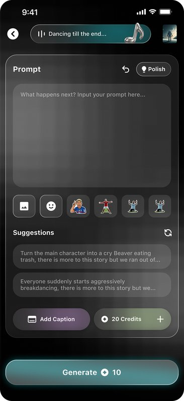
Redesign 4 - Editor page
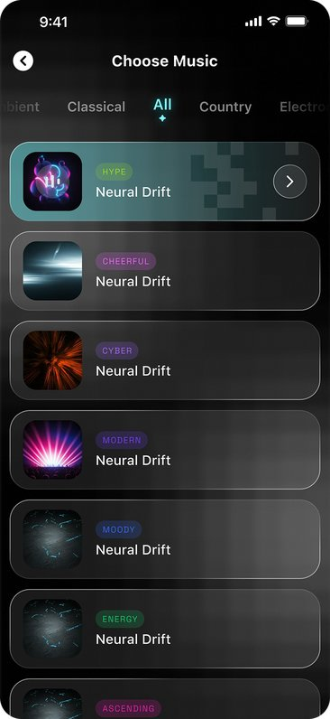
Redesign 4 - Music page
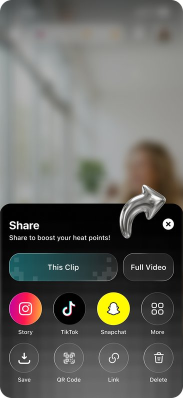
Redesign 4 - Share page
I designed elements that were meant to look good in motion, since motion adds personality.
Non-traditional UI patterns to show playfulness while overall layout remains simple.
Used starry and pixel elements throughout the design to reinforce the storytelling.
Choosing a design
The team decided that dark mode better fits the app’s identity, narrowing the choice down to Redesign 2 (Dark Neon) and Redesign 4 (Cyber Pop).
The team felt Redesign 4’s starry, pixel-art details struck a better balance of playful and futuristic, while Redesign 2 felt less fun.
Context
Wapoo hosted a World Cup-themed event called “World Cup Fan War,” where users picked a real team to represent and competed by creating content and interacting with others to earn “heat” for their team. I worked as part of a 2-person team on the interfaces below.
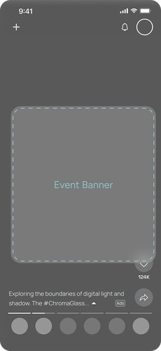
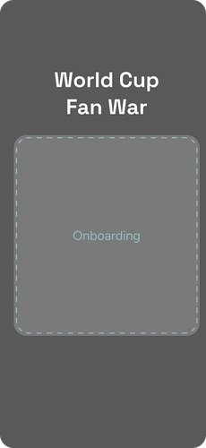
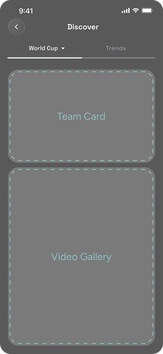
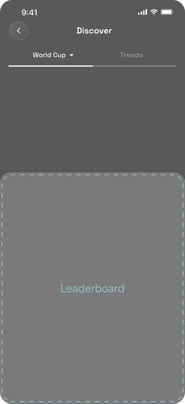
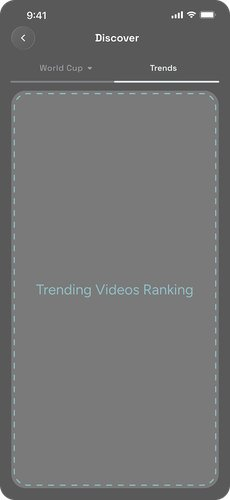
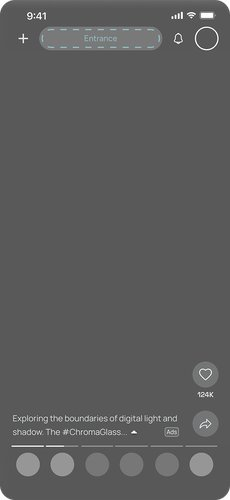
Current users receive a notification banner
New users are brought to an onboarding page.
Users track the event’s progress on the event page
A leaderboard shows the current team rankings.
There’s a ranking for the popular videos on site.
Entrance to event page is on the home page.
How might we design interfaces that encourages users to represent and contribute to their team on Wapoo throughout the World Cup Fan War?
Design Decisions
The onboarding flow introduces new users to the World Cup Fan War event right after they create an account, guiding them through choosing which team to represent.
Design Decisions
The team card should display 1) the user’s team, 2) region, 3) whether their team is leading or losing to the USA, 4) current points (heat), 5) and a countdown until the event ends. The product team later changed these requirements, so the final design looked different.
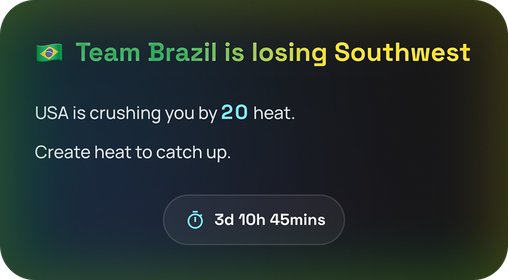
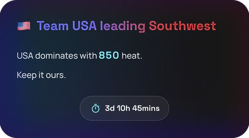
Version 1
Text-based, slow to read, lacks an engaging layout.
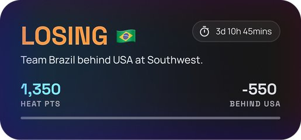
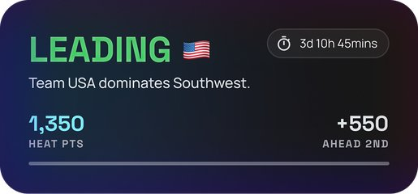
Version 2
Short, colored labels (Leading and Losing) lets users grasp their team’s status at a glance.
Engaging dashboard format.
The “Leading + flag” message can be misread.
Divider seems unnecessary with no content below it.
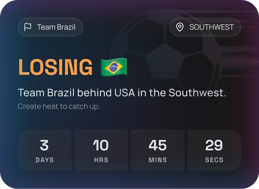
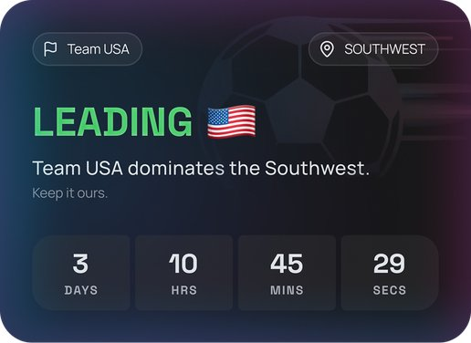
Version 3
Added a label for the user’s own team to avoid confusion.
Added football-themed background graphics.
Removed statistics (e.g. team total heat) from the card.
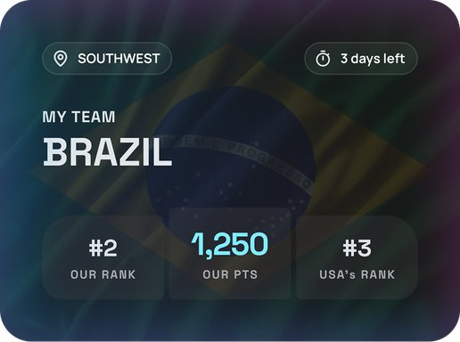
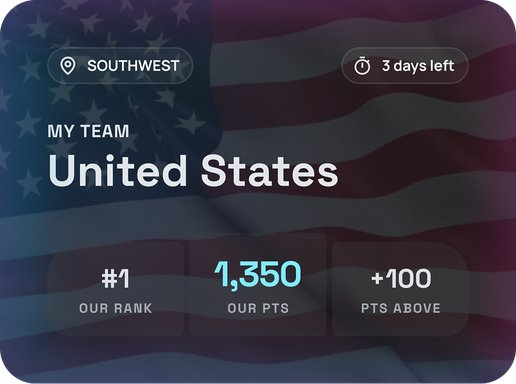
Version 4
Brought back missing statistics, but showed hierarchy between information to avoid overload.
Removed the misleading “Leading + flag” phrasing.
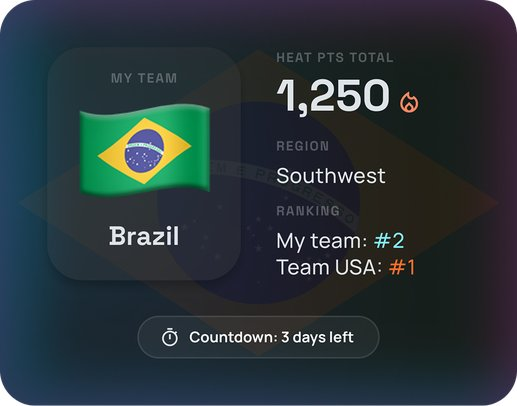
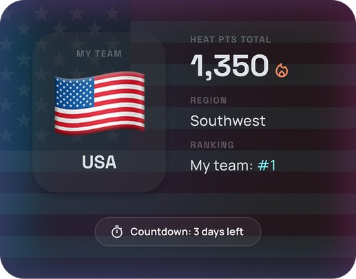
Version 5
Clearly presents information with the left side showing fixed information and right side showing those subject to change.
Less visually striking, weaker sense of competition.
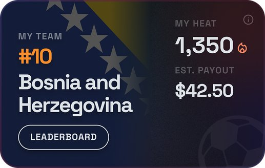
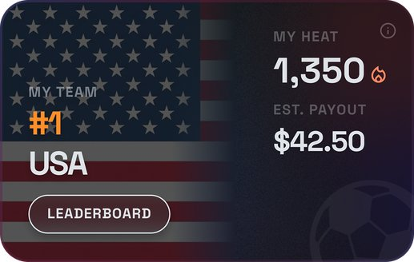
Final Design
Fixed information on left and data subject to change on right, a clear format to present information.
Used country flags as backgrounds to create the sense of fighting for a team.
Tested an edge case with the longest country name to make sure the layout still held up.
Design Decisions
The Trending Videos page ranks the 10 most popular videos on the app, encouraging users to create and engage with content in hopes of landing on the list. It is a permanent feature.
Design Decisions
The Video Gallery displays videos posted or generated by Wapoo for each World Cup match.
Final Designs
Users see an opening graphic for the onboarding flow.
Users can select any country as their team.
Yet they are encouraged to select Team USA.
User can see their personal contribution and payout on the events page.
They can view detailed rules after clicking the info icon.
They can also see the ranking for their team.
On another tab, users can see the 10 most popular videos on site right now.
After exiting the events page, users can get back at the entrance on top.
Users can also use World Cup themed stickers in the video editor.
The winning team and payback information is shown at the end of the event.